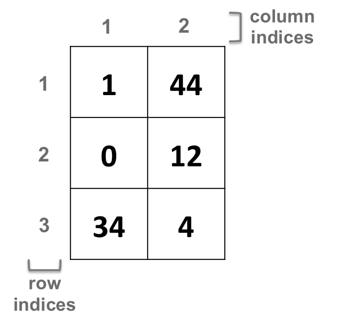
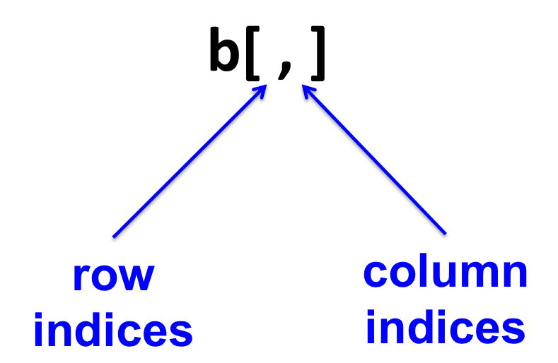
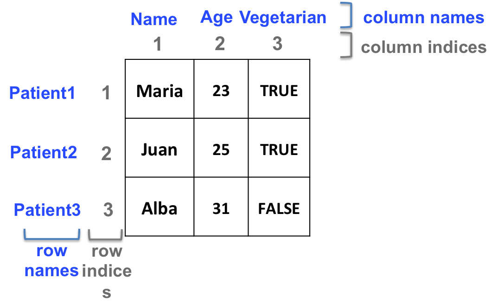
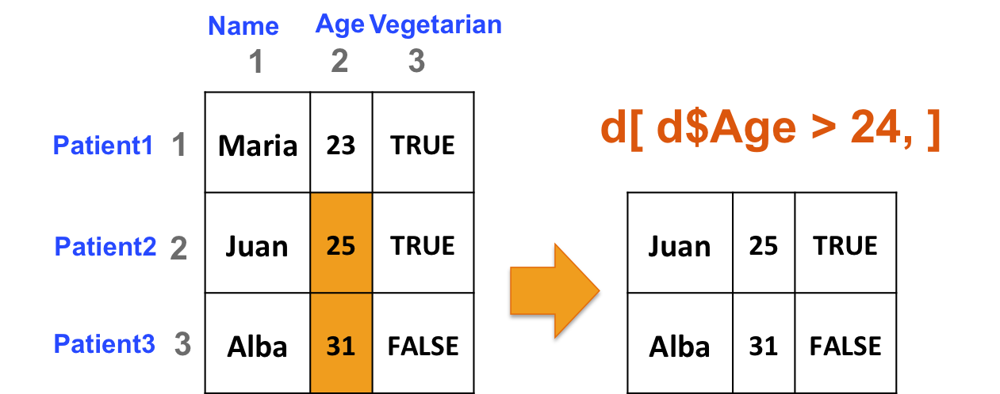
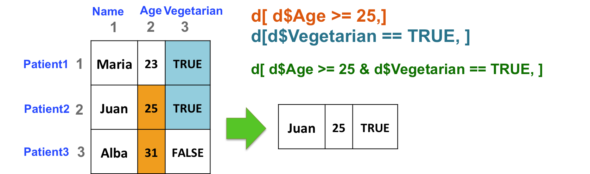

Part9 Data structures
The main data structures are:
- Vector
- Factor
- Matrix
- Data frame
9.1 Vectors
A vector is a sequence of data elements from the same type.
9.1.1 Creating a vector
- Values are assigned to a vector using the c command (combining elements).
You can create an empty vector with:
- Create a sequence of consecutive numbers:
- Character vectors: Each element is entered between (single or double) quotes.
9.1.2 Vector manipulation
- A vector can be named: each element of the vector can be assigned a name (number or character)
names(a) <- c("mRNA", "miRNA", "snoRNA", "lncRNA")
# use an object which already contains a vector
names(a) <- b- Get the length (number of elements) of a vector
## [1] 6- Extracting elements from vector a
- extract elements using their position (index) in the vector:
## [1] 1## [1] 1 3## [1] 2 3 4- extract elements using their names:

## [1] NA## [1] NA NA - Reassigning a vector’s element
- Removing a vector’s element
- Show versus change
x[-2] x unchanged !
x <- x[-2] x reassigned !
9.1.3 Combining vectors
- From 2 vectors a and b you can create a vector d
The elements of b are added after the elements of a
- Likewise, you can add elements at the end of a vector
9.1.4 Numeric vector manipulation
Logical operators
| Operator | Description |
|---|---|
| < | less than |
| <= | less than or equal to |
| > | greater than |
| >= | greater than or equal to |
| == | exactly equal to |
| != | not equal to |
| !x | not x |
| x | y | x OR y |
| x & y | x AND y |
- Which elements of a are equal to 2?
## [1] FALSE TRUE FALSE FALSE FALSE- Which elements of a are superior to 2?
## [1] FALSE FALSE TRUE TRUE TRUE- Extract elements of a vector that comply with a condition:
## [1] FALSE TRUE TRUE TRUE TRUE## [1] 2 3 4 59.1.4.1 Operations on vectors
- Adding 2 to a vector adds 2 to each element of the vector:
## [1] 3 4 5 6 7Same goes for subtractions, multiplications and divisions…
- Multiplying a vector by another vector of equal length
## [1] 4 12 0- Multiplying a vector by another shorter vector
## Warning in a * b: longer object length is not a multiple of shorter object
## length## [1] 4 12 0 6 3Vector a is “recycled” !
- Summary statistics
| Function | Description |
|---|---|
| mean(x) | mean / average |
| median(x) | median |
| min(x) | minimum |
| max(x) | maximum |
| var(x) | variance |
| summary(x) | mean, median, min, max, quartiles |
## Min. 1st Qu. Median Mean 3rd Qu. Max.
## 1.00 2.25 3.00 11.00 9.75 45.009.1.5 Character vector manipulation
Character vectors are manipulated similarly to numeric ones.
- The %in% operator:
k <- c("mRNA", "miRNA", "snoRNA", "RNA", "lincRNA")
p <- c("mRNA","lincRNA", "tRNA", "miRNA")
k %in% p## [1] TRUE TRUE FALSE FALSE TRUE## [1] "mRNA" "miRNA" "lincRNA"- Select elements from vector m that are not exon
## [1] FALSE TRUE FALSE## [1] "intron"9.2 Exercise 2. Numeric vector manipulation
9.2.1 Exercise 2a.
Create the script “exercise2.R” and save it to the “Rcourse/Module1” directory: you will save all the commands of exercise 2 in that script.
Remember you can comment the code using #.
1- Go to Rcourse/Module1 First check where you currently are with getwd(); then go to Rcourse/Module1 with setwd()
2- Create a numeric vector y which contains the numbers from 2 to 11, both included.
Show y in the terminal.
correction
## [1] 2 3 4 5 6 7 8 9 10 113- How many elements are in y? I.e what is the length of vector y ?
4- Show the 2nd element of y.
5- Show the 3rd and the 6th elements of y.
6- Remove the 4th element of y: reassign. What is now the length of y ?
7- Show all elements of y that are less than 7.
correction
## [1] TRUE TRUE TRUE TRUE FALSE FALSE FALSE FALSE FALSE## [1] 2 3 4 68- Show all elements of y that are greater or equal to 4 and less than 9.
9- Create the vector x of 1000 random numbers from the normal distribution:
First read the help page of the rnorm() function.
correction
10. What are the mean, median, minimum and maximum values of x?
correction
## [1] -6.068539e-05## [1] 0.003553454## [1] -2.97772## [1] 3.0541611- Run the summary() function on x.
What additional information do you obtain ?
correction
## Min. 1st Qu. Median Mean 3rd Qu. Max.
## -2.9777195 -0.6498501 0.0035535 -0.0000607 0.6728973 3.054159512- Create vector y2 as:
13. What is the sum of all elements in y2 ?
14- Which elements of y2 are also present in y ?
Note: remember the %in% operator.
15- Multiply each element of y2 by 1.5: reassign.
correction
16- Use the function any() to check if the number 3 is present.
correction
## [1] TRUE9.2.2 Exercise 2b.
1- Create the vector myvector as:
Create the same vector using the rep() function (?rep)
correction
2- Reassign the 5th, 6th and 7th position of myvector with the values 8, 12 and 32, respectively.
correction
3- Calculate the fraction/percentage of each element of myvector (relative to the sum of all elements of the vector).
sum() can be useful.
correction
# sum of all elements of the vector
mytotal <- sum(myvector)
# divide each element by the sum
myvector / mytotal## [1] 0.015625 0.031250 0.046875 0.015625 0.125000 0.187500 0.500000 0.031250
## [9] 0.046875## [1] 1.5625 3.1250 4.6875 1.5625 12.5000 18.7500 50.0000 3.1250 4.68754- Add vector c(2, 4, 6, 7) to myvector (combining both vectors): reassign!
correction
# create the new vector
newvector <- c(2, 4, 6, 7)
# combine both myvector and newvector
c(myvector, newvector)## [1] 1 2 3 1 8 12 32 2 3 2 4 6 79.3 Exercise 3. Character vector manipulation
9.3.1 Exercise 3a.
Create the script “exercise3.R” and save it to the “Rcourse/Module1” directory: you will save all the commands of exercise 3 in that script.
Remember you can comment the code using #.
1- Go to Rcourse/Module1 First check where you currently are with getwd(); then go to Rcourse/Module1 with setwd()
2- Create vector w as:
3- View vector w in the console: how does function rep() work ?
Play with the times argument.
correction
## [1] "miRNA" "miRNA" "miRNA" "mRNA" "mRNA" "mRNA" "mRNA"## [1] "miRNA" "miRNA" "miRNA" "miRNA" "miRNA" "miRNA" "miRNA" "miRNA"
## [9] "miRNA" "miRNA" "mRNA" "mRNA"4- What is the output of table(w) ? What does the table function do ?
5- Type w[grep(pattern=“mRNA”, x=w)] and w[w == “mRNA”]
Is there a difference between the two outputs?
correction
## [1] "mRNA" "mRNA"## [1] "mRNA" "mRNA"6- Now type w[grep(pattern=“RNA”, w)] and w[w == “RNA”]
Is there a difference between the two outputs?
correction
## [1] "miRNA" "miRNA" "miRNA" "mRNA" "mRNA"## character(0)What is the difference between == and grep ?
correction
= looks for exact matches.
grep looks for patterns.
7- Create vector g as:
How many elements do w and g contain?
8- Do vectors w and g have the same length? Use the function identical() to check this.
9- Name the elements of g using the elements of w.
(i.e. the names of each element of g will be the elements of w).
correction
If you have time, continue with Exercise 3b below.
9.3.2 Exercise 3b.
1- Use the sub() function to replace miRNA with microRNA in the names of g.
2- Count how many microRNAs and mRNAs there are in g based on the column names.
3- Create vector tt as:
How many characters does tt contain? Use nchar().
4- Remove “Introduction to R” from tt.
You can try with either substr() or gsub()
correction
## [1] "R course"## [1] " course"9.4 Factors
A factor is a vector object (1 dimension) used to specify a discrete classification (grouping) of the components of other vectors.
Factors are mainly used for statistical modeling, and can also be useful for graphing.
You can create factors with the factor function, for example:
## Factor w/ 3 levels "high","low","medium": 1 2 3 2- Example of a character vector versus a factor
# factor
e <- factor(c("high", "low", "medium", "low"))
# character vector
e2 <- c("high", "low", "medium", "low")
# Check the structure of both objects
str(e)## Factor w/ 3 levels "high","low","medium": 1 2 3 2## chr [1:4] "high" "low" "medium" "low"- Groups in factors are called levels.
Levels can be ordered. Then, some operations applied on numeric vectors can be used:
9.5 Matrices
A matrix is a 2 dimensional vector.
- All columns in a matrix must have:
- the same type (numeric, character or logical)
- the same length
9.5.1 Creating a matrix
- From vectors with the rbind function:
- From vectors with the cbind function:
- From scratch with the matrix function:
9.5.2 Two-dimensional object
Vectors have one index per element (1-dimension).
Matrices have two indices (2-dimensions) per element, corresponding to the row and the column:

- Fetching elements of a matrix:
The “coordinates” of an element in a 2-dimensional object will be first the row (on the left of the comma), then the column (on the right of the comma):

9.5.3 Matrix manipulation
- Add 1 to all elements of a matrix
- Multiply by 3 all elements of a matrix
- Subtract 2 to each element of the first row of a matrix
- Replace elements that comply a condition:
9.6 Data frames
A data frame is a 2-dimensional structure.
It is more general than a matrix.
All columns in a data frame:
+ can be of different types (numeric, character or logical)
+ must have the same length
9.6.1 Create a data frame
- With the data.frame function:
# stringsAsFactors: ensures that characters are treated as characters and not as factors
d <- data.frame(c("Maria", "Juan", "Alba"),
c(23, 25, 31),
c(TRUE, TRUE, FALSE),
stringsAsFactors = FALSE)- Example why “stringsAsFactors = FALSE” is useful
# Create a data frame with default parameters
df <- data.frame(label=rep("test",5), column2=1:5)
# Replace one value
df[2,1] <- "yes"## Warning in `[<-.factor`(`*tmp*`, iseq, value = "yes"): invalid factor
## level, NA generated# Create a data frame with
df2 <- data.frame(label=rep("test",5), column2=1:5, stringsAsFactors = FALSE)
# Replace one value
df2[2,1] <- "yes"
# Works!- Converting a matrix into a data frame:
9.6.2 Data frame manipulation:
Very similar to matrix manipulation.
9.7 Two-dimensional structures manipulation
9.7.1 Dimensions
- Get the number of rows and the number of columns:
# Create a data frame
d <- data.frame(c("Maria", "Juan", "Alba"),
c(23, 25, 31),
c(TRUE, TRUE, FALSE),
stringsAsFactors = FALSE)
# number of rows
nrow(d)## [1] 3## [1] 3- Check the dimensions of the object: both number of rows and number of columns:
## [1] 3 3- Dimension names
Column and/or row names can be added to matrices and data frames
Column and/or row names can be used to retrieve elements or sets of elements from a 2-dimensional object:

## [1] "Maria" "Juan" "Alba"## [1] "Maria" "Juan" "Alba"## [1] 31## [1] 31# for data frames only, the $ sign can be used to retrieve columns:
# d$Name is d[,1] is d[, "Name"]- Include names as you create objects:
- Matrix:
+ Data frame:9.7.2 Manipulation
Same principle as vectors… but in 2 dimensions!
Examples
- select the columns of b if at least one element in the 3rd row is less than or equal to 4:
## [1] 34 4## [1] FALSE TRUE## [1] 44 12 4- Select rows of b if at least one element in column 2 is greater than 24:
# build data frame d
d <- data.frame(Name=c("Maria", "Juan", "Alba"),
Age=c(23, 25, 31),
Vegetarian=c(TRUE, TRUE, FALSE),
stringsAsFactors = FALSE)
rownames(d) <- c("Patient1", "Patient2", "Patient3")
# The following commands all output the same result:
d[d[,2] > 24, ]## Name Age Vegetarian
## Patient2 Juan 25 TRUE
## Patient3 Alba 31 FALSE## Name Age Vegetarian
## Patient2 Juan 25 TRUE
## Patient3 Alba 31 FALSE## Name Age Vegetarian
## Patient2 Juan 25 TRUE
## Patient3 Alba 31 FALSE
- Select patients (rows) based on 2 criteria: age of the patient (column 2) should be great than or equal to 25, and the patient should be vegetarian (column 3):
## Name Age Vegetarian
## Patient2 Juan 25 TRUE
More useful commands
- Add a row or a column with rbind and cbind, respectively
## Name Age Vegetarian 1:3
## Patient1 Maria 23 TRUE 1
## Patient2 Juan 25 TRUE 2
## Patient3 Alba 31 FALSE 3## Name Age Vegetarian
## Patient1 Maria 23 1
## Patient2 Juan 25 1
## Patient3 Alba 31 0
## 4 4 5 6Add a patient to our data frame d:
- Process the sum of all rows or all columns with rowSums and colSums, respectively.
## [1] 34 38 42 46 50## [1] 15 40 65 90- The apply function
Powerful tool to apply a command to all rows or all columns of a data frame or a matrix.
For example, instead of calculating the sum of each row, you might be interested in calculating the median ? But rowMedians doesn’t exist !
apply takes 3 arguments:
- first argument X: 2-dimensional object
- second argument MARGIN: apply by row or by column?
+ 1: by row
+ 2: by column
- third argument FUN: function to apply to either rows or columns
## [1] 8.5 9.5 10.5 11.5 12.5## [1] 3 8 13 189.8 Exercise 4. Matrix manipulation
Create the script “exercise4.R” and save it to the “Rcourse/Module1” directory: you will save all the commands of exercise 4 in that script.
Remember you can comment the code using #.
1- Create three numeric vectors x, y, z, each of 4 elements of your choice.
Use rbind() to create a matrix mat (3 rows and 4 columns) out of x, y and z.
correction
2- Create the same matrix now using the matrix function.
correction
3- Add names to mat’s columns: “a”, “b”, “c”, “d”, respectively.
correction
4- Calculate the sum of each row, and the sum of each column
5- Create the matrix mat2 as:
What does function seq() do?
correction
seq generate sequences of numbers. Here, it creates a sequences from 1 to 10 with a step of 2 numbers.
6- What are the dimensions of mat2 (number of rows and number of columns)?
correction
## [1] 5## [1] 3## [1] 5 37- Add column names to mat2: “day”, “month” and “year”, respectively.
correction
8- Add row names to mat2: letters “A” to “E”
9- Shows row(s) of mat2 where the month column is greater than or equal to 3.
correction
## A B C D E
## 5 4 3 2 1## A B C D E
## TRUE TRUE TRUE FALSE FALSE# finally select row(s) where the month columns is greater than or equal to 3
mat2[mat2[,"month"] >= 3,]## day month year
## A 1 5 2017
## B 3 4 2017
## C 5 3 201710- Replace all elements of mat2 that are equal to 2017 with 2018.
correction
## day month year
## A FALSE FALSE TRUE
## B FALSE FALSE TRUE
## C FALSE FALSE TRUE
## D FALSE FALSE TRUE
## E FALSE FALSE TRUE## [1] 2017 2017 2017 2017 201711- Multiply all elements of the 2nd column of mat2 by 7. Reassign mat2!
correction
## A B C D E
## 35 28 21 14 712- Add the column named “time” to mat2, that contains values 8, 12, 11, 10, 8. Save in the new object mat3.
13- Replace all elements of mat3 that are less than 3 with NA.
correction
## day month year time
## A TRUE FALSE FALSE FALSE
## B FALSE FALSE FALSE FALSE
## C FALSE FALSE FALSE FALSE
## D FALSE FALSE FALSE FALSE
## E FALSE FALSE FALSE FALSE## [1] 114- Remove rows from mat3 if a NA is present. Save in the new object mat4.
correction
15- Retrieve the smaller value of each column of mat4.
Try different approaches:
- Retrieve the minimum for each column one by one.
correction
## [1] 3## [1] 7## [1] 2018## [1] 8- Retrieve the minimum of all columns simultaneously using the apply() function.
correction
## day month year time
## 3 7 2018 89.9 Exercise 5. Data frame manipulation
Create the script “exercise5.R” and save it to the “Rcourse/Module1” directory: you will save all the commands of exercise 5 in that script.
Remember you can comment the code using #.
9.9.1 Exercise 5a
1- Create the following data frame:
|43|181|M| |34|172|F| |22|189|M| |27|167|F|
With Row names: John, Jessica, Steve, Rachel.
And Column names: Age, Height, Sex.
correction
2- Check the structure of df with str().
correction
3- Calculate the average age and height in df
Try different approaches: * Calculate the average for each column separately.
correction
- Calculate the average of both columns simultaneously using the apply() function.
correction
4- Add one row to df2: Georges who is 53 years old and 168 tall.
correction
5- Change the row names of df so the data becomes anonymous: Use Patient1, Patient2, etc. instead of actual names.
correction
6- Create the data frame df2 that is a subset of df which will contain only the female entries.
correction
7- Create the data frame df3 that is a subset of df which will contain only entries of males taller than 170.
9.9.2 Exercise 5b
1. Create two data frames mydf1 and mydf2 as:
mydf1:
|1|14| |2|12| |3|15| |4|10|
mydf2:
|1|paul| |2|helen| |3|emily| |4|john| |5|mark|
With column names: “id”, “age” for mydf1, and “id”, “name” for mydf2.
correction
2- Merge mydf1 and mydf2 by their “id” column. Look for the help page of merge and/or Google it!
correction
3- Order mydf3 by decreasing age. Look for the help page of order.
9.9.3 Exercise 5c
1- Using the download.file function, download this file to your current directory. (Right click on “this file” -> Copy link location to get the full path).
correction
2- The function dir() lists the files and directories present in the current directory: check if genes_dataframe.RData was copied.
correction
3- Load genes_dataframe.RData in your environment Use the load function.
correction
4- genes_dataframe.RData contains the df_genes object: is it now present in your environment?
correction
5- Explore df_genes and see what it contains You can use a variety of functions: str, head, tail, dim, colnames, rownames, class…
correction
6- Select rows for which pvalue_KOvsWT < 0.05 AND log2FoldChange_KOvsWT > 0.5. Store in the up object.
correction
# rows where pvalue_KOvsWT < 0.05
df_genes$pvalue_KOvsWT < 0.05
# rows where log2FoldChange_KOvsWT > 0.5
df_genes$log2FoldChange_KOvsWT > 0.5
# rows that comply both of the above conditions
df_genes$pvalue_KOvsWT < 0.05 & df_genes$log2FoldChange_KOvsWT > 0.5
# select rows for which pvalue_KOvsWT < 0.05 AND log2FoldChange_KOvsWT > 0.5
up <- df_genes[df_genes$pvalue_KOvsWT < 0.05 &
df_genes$log2FoldChange_KOvsWT > 0.5,]How many rows (genes) were selected?
7- Select from the up object the Zinc finger protein coding genes (i.e. the gene symbol starts with Zfp). Use the grep() function.
correction
8- Select rows for which pvalue_KOvsWT < 0.05 AND log2FoldChange_KOvsWT is > 0.5 OR < -0.5.
For the selection of log2FoldChange: give the abs function a try!
Store in the diff_genes object.
correction
# rows where pvalue_KOvsWT < 0.05
df_genes$pvalue_KOvsWT < 0.05
# rows where log2FoldChange_KOvsWT > 0.5
df_genes$log2FoldChange_KOvsWT > 0.5
# rows where log2FoldChange_KOvsWT < -0.5
df_genes$log2FoldChange_KOvsWT > -0.5
# rows where log2FoldChange_KOvsWT < -0.5 OR log2FoldChange_KOvsWT > 0.5
df_genes$log2FoldChange_KOvsWT > 0.5 | df_genes$log2FoldChange_KOvsWT > -0.5
# same as above but using the abs function
abs(df_genes$log2FoldChange_KOvsWT) > 0.5
# combine all required criteria
df_genes$pvalue_KOvsWT < 0.05 & abs(df_genes$log2FoldChange_KOvsWT) > 0.5
# extract corresponding entries
diff_genes <- df_genes[df_genes$pvalue_KOvsWT < 0.05 &
abs(df_genes$log2FoldChange_KOvsWT) > 0.5,]How many rows (genes) were selected?